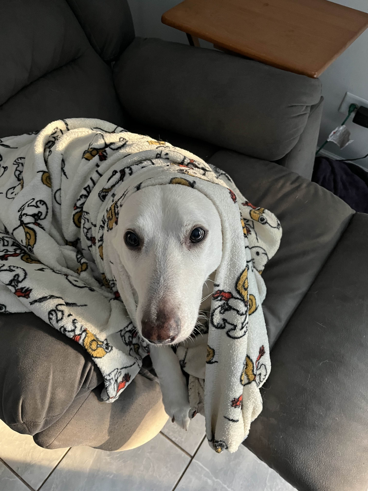
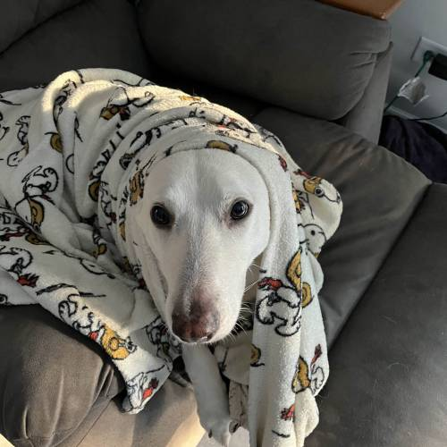
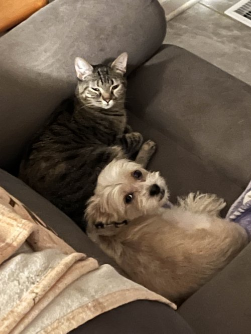
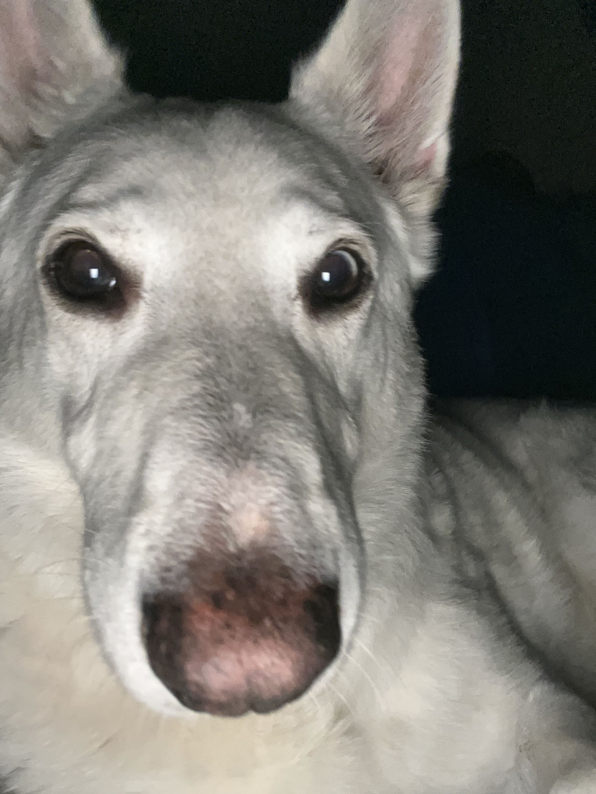
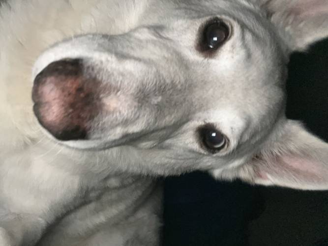
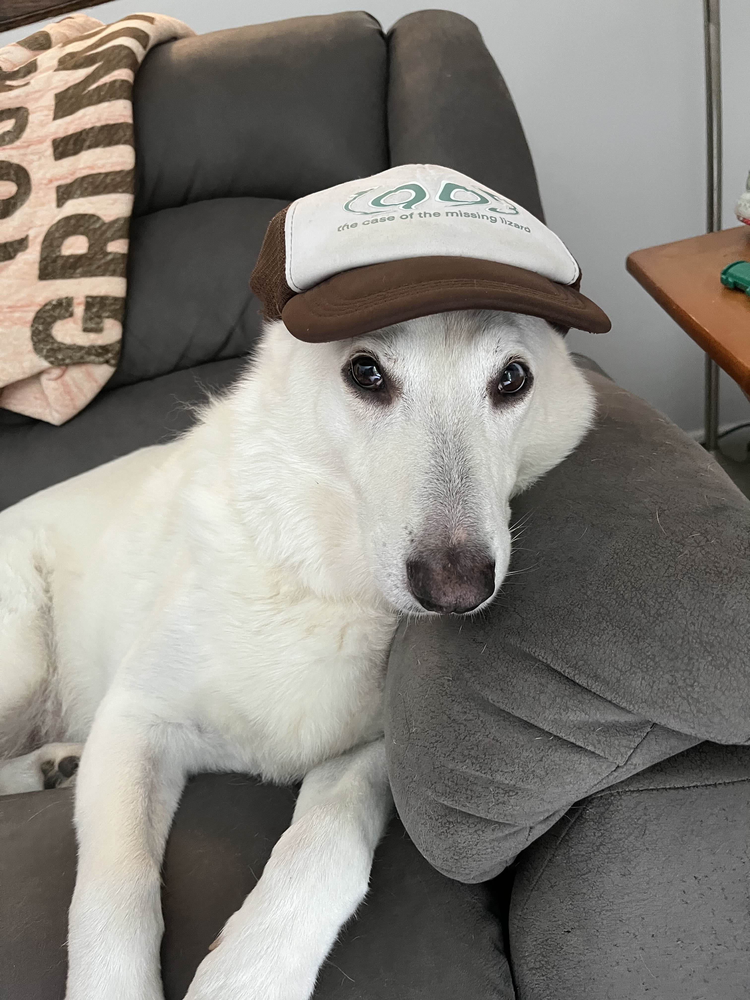
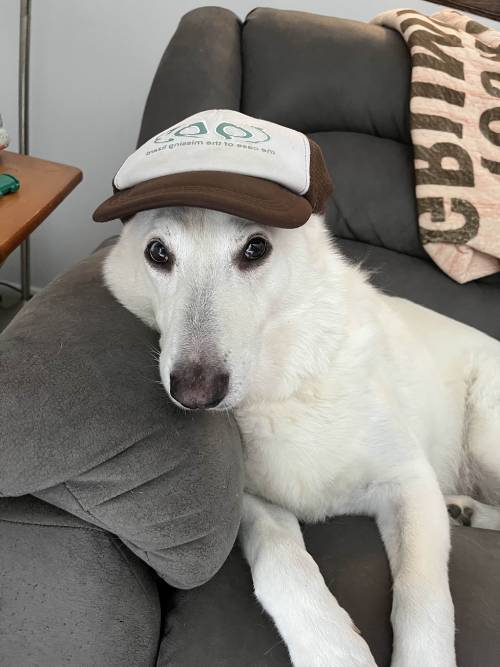
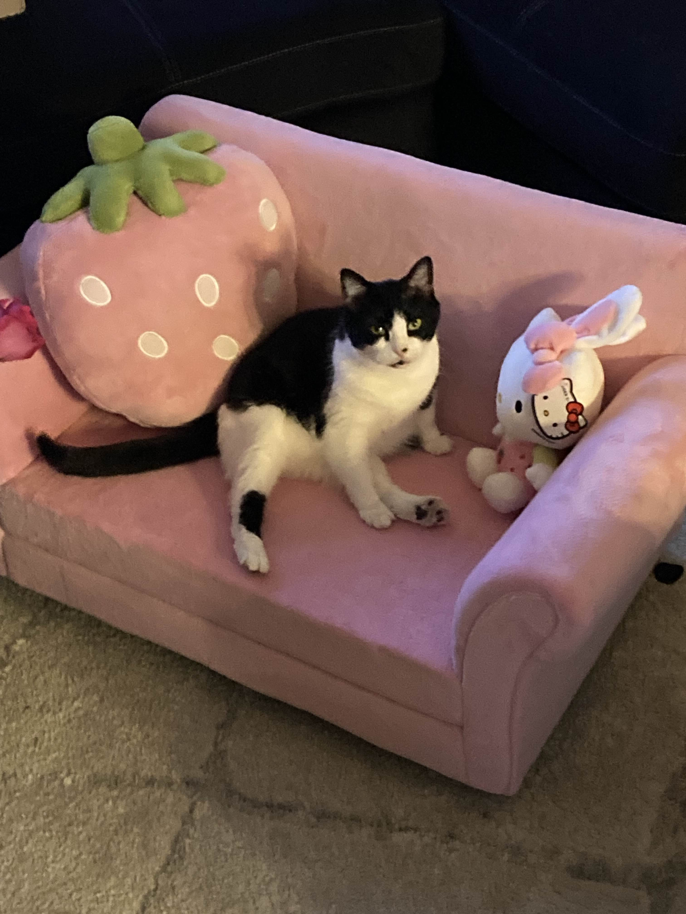
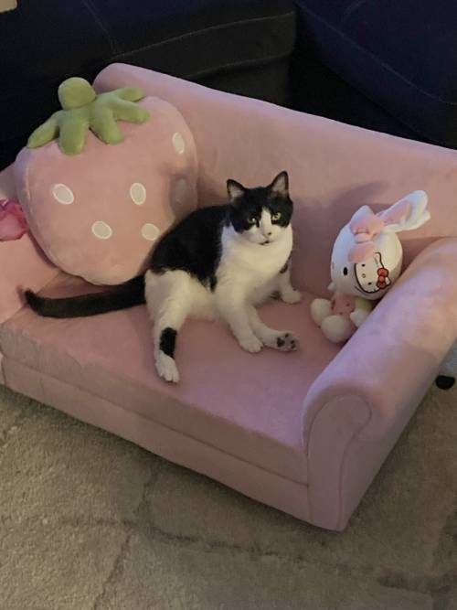

For each technique, I’ve included a Before and an After image, plus notes on what I changed. I also recorded the dimensions, format, and file size for the After version.
Crop
Goal: remove distractions and improve composition.
Before

After — Crop

Resize
Goal: scale the image to an appropriate web size.
Before

After — Resize
Rotate
Goal: fix orientation or straighten the subject.
Before

After — Rotate

Flip
Goal: create a mirrored composition.
Before

After — Flip

Exposure / Contrast
Goal: improve brightness and contrast for clarity.
Before

After — Exposure / Contrast

Format / Compression
Goal: export to JPG or WebP at smaller file size.
Before
After — Compression